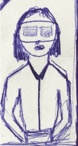

DAG 5 (Test):
Sista delen av Design Sprint skulle vi testa våra användare. Vi kunde inte testa många äldre på
grund av pandemi men vi testade bara några äldre i familjen. Vi beskrev hela vår produkt från början
och hur man kunde använda det. Vi fick några feedback av tester.

Vi behövde testa och rätta vår app men tyvärr hade inte vi tillräcklig tid för att testa och testa.
Jag tänker fortfarande skaffa ett program i VR eller en VR glasögon med glas material som äldre ska
kunna använda det. Förhoppningsvis, ska den produkten vara min framtida UX-produkt.



Social Media
Let's be friends
LinkedIn
Github
Youtube
Email